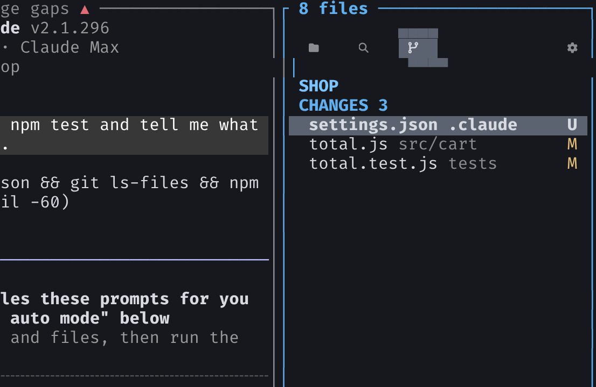
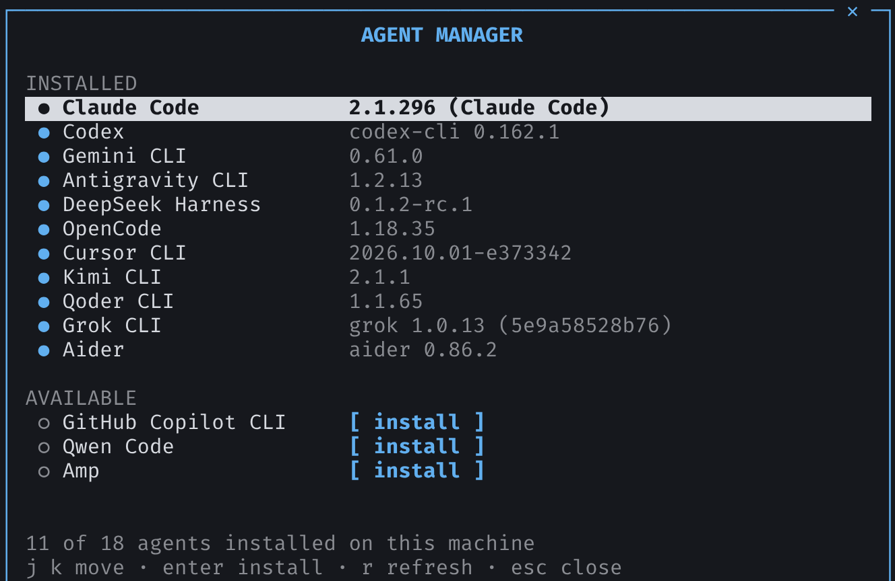
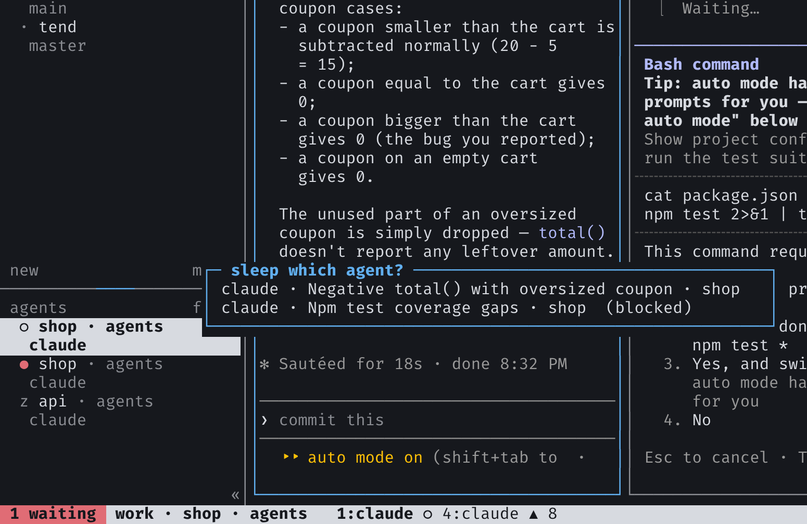
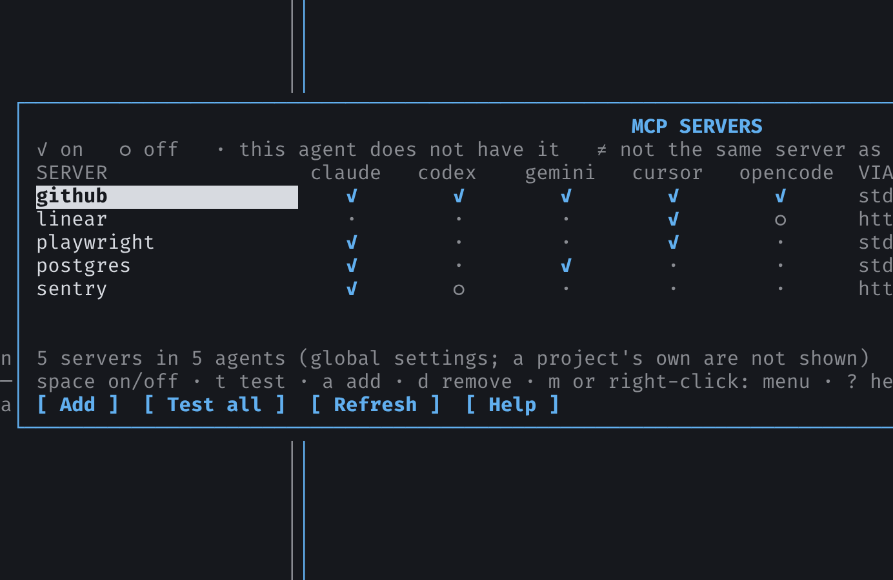
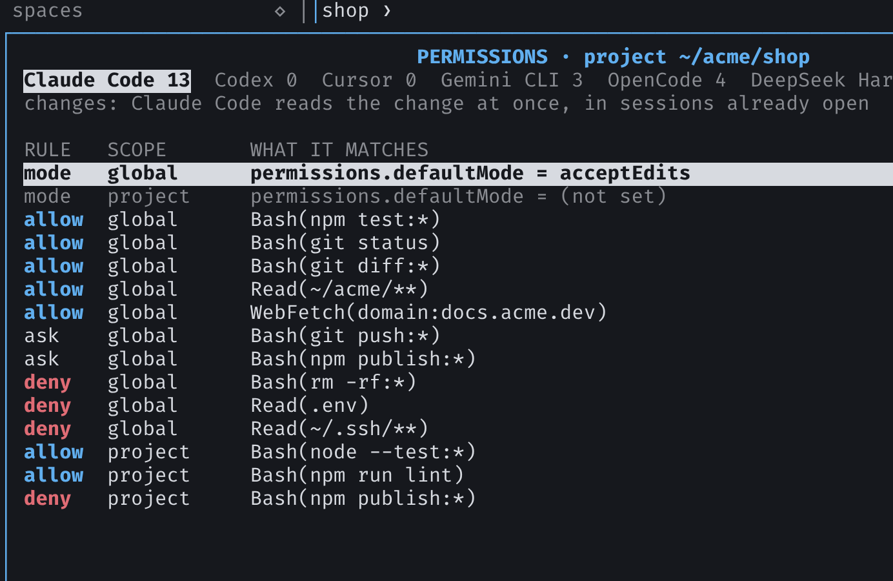
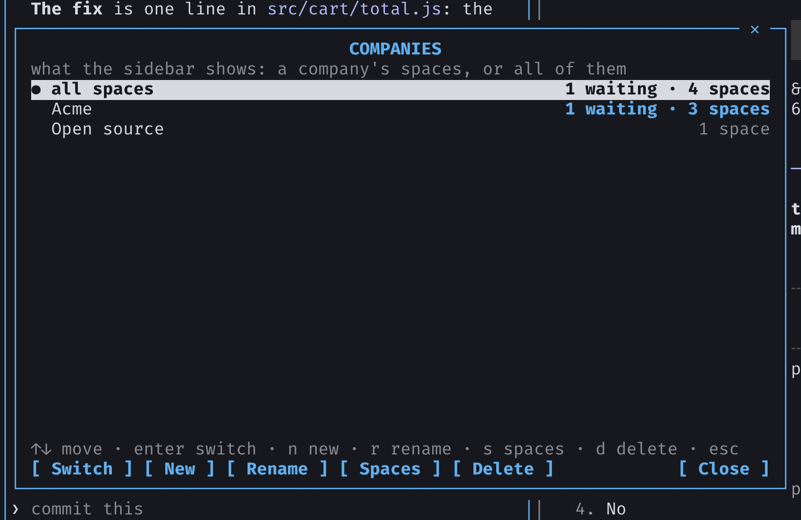
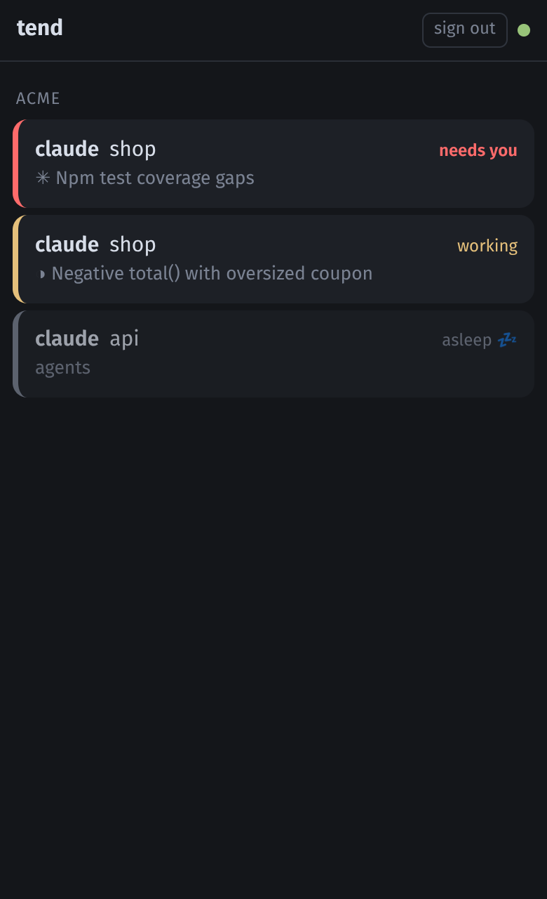
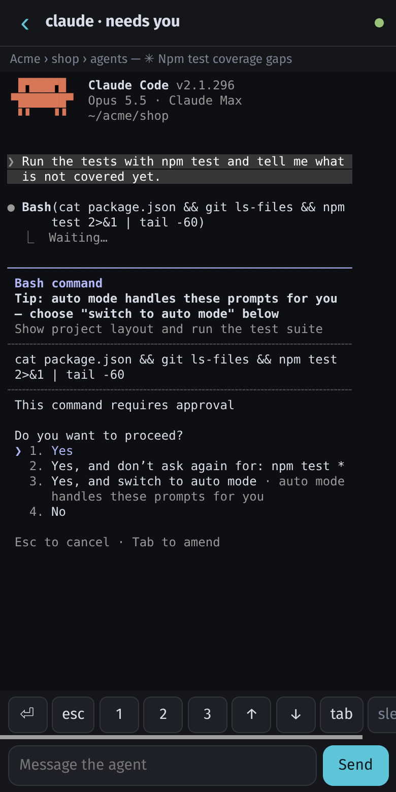

ファイル f
ペインの横のパネル：プロジェクトのツリー、その中の検索、git の変更 — diff、stage、commit、push。作業中のペインに追従します。
tend
AI コーディングエージェントのためのターミナル。tend は GitHub の issue や本番環境のエラーを受け取り、worktree を開いて Claude Code、Codex、あるいはお使いのエージェントに渡します。そしてすべてのエージェントを一つの画面に表示します：作業中、あなたを待っている、完了。
Linux と macOS · Windows は WSL で · 単一バイナリ、オープンソース
curl -fsSL https://tend.auth.com.br/install.sh | sh
ダウンロード tend-linux-amd64 · arm64 · すべてのビルド
バイナリを ~/.local/bin（または $GOBIN / $TEND_INSTALL_DIR）に置きます。このマシン向けのリリースがあればそれを使い、なければ Go でクローンしてビルドします。
チェックアウトから: make install。
tend は Linux と macOS のみです。Windows 用のバイナリはありません。
Windows では WSL 上で Linux 用インストーラを使うか、Unix でクローンして make install してください。 手順は WSL ガイド を参照してください。
実際のセッション：作業中のエージェント、コマンドの承認を待つエージェント、スリープ中のエージェント、そして横にプロジェクトのファイル。誰も見ていなくてもサーバーは動き続けます。
引数なしで tend を実行するとセッションを開き、サーバーがなければ起動します。tend new -- claude でペインを開き、tend ls で一覧、-s NAME で別セッションを並べます。
Go 製。単一バイナリ。cgo なし。
サイドバー上部のボタン。それぞれプレフィックスの後のキーでも開けます。

ペインの横のパネル：プロジェクトのツリー、その中の検索、git の変更 — diff、stage、commit、push。作業中のペインに追従します。

tend が知っているエージェント CLI — Claude Code、Codex、Gemini CLI、Cursor、OpenCode など — のうち、このマシンにあるものと、残りのインストールコマンド。確認するとタブで実行します。

再起動後、エージェントはそのペインに移動したときにだけ、元の会話のまま起動します。アイドルのままのエージェントは自動的にメモリを解放するので、多数のエージェントを抱えていてもマシンが重くなりません。

すべてのエージェントの MCP サーバーを一つの表で：任意のエージェントでオン・オフ、テスト、別のエージェントへコピー、一行で追加。

各エージェントが確認なしでできることを、マシン全体とプロジェクトごとに：ルールを許可・確認・拒否で切り替えたり、ファイルをエディタで開いたりできます。

複数の会社の仕事をしていますか。会社ごとに space をまとめて選ぶと、サイドバーにはその会社のプロジェクトとエージェントだけが表示されます。ほかの会社で待っているエージェントも知らせます。
プロジェクトの issue と pull request を gh 経由で。コメント、クローズ、ラベル、マージ。issue で w を押すと worktree を作り、そこでエージェントに issue を完了させます。 GitLab（gitlab.com や社内の GitLab）のプロジェクトも、マージリクエストを含めて同じように使えます。
マシン上の Claude Code の会話をタイトルで一覧。入力して検索、enter で元のディレクトリの新しいタブで再開、古いものはマークして削除。
システムの GlitchTip サーバーが捕捉したエラー（複数サーバー対応）。エラーを開いてスタックを読み、f でエージェントに渡し、w で worktree で修正、ctrlx で解決。プロジェクトごとに開くサーバーを決められます。 Linear・Jira・ClickUp のチケットは専用パネル T で、同じようにエージェントに渡せます。
tend の拡張機能入りの Chromium、Chrome、Edge：ページの要素を選び、それぞれにメモを付け、コンテキストパネルで確認してからエージェントへ送ります。
tend web は自宅のネットワークや VPN 上のスマートフォン向けページを提供します：各エージェントの状態、ライブ画面、メッセージ入力欄、そしてエージェントがあなたを必要としたときの通知。操作できるのはエージェントだけで、シェルは使えません。
新しいリリースを検知して知らせます。リリースノートで u を押すとインストールし、ペインのプログラムを止めずにセッションを移行します。
GITHUB ISSUES · acme/shop 4 of 4 open assigned to me created by me closed Issues Pull requests search label:bug # title labels author age 42 Checkout button is grey on mobile bug ana 3h 41 Footer links overlap the badge bug, ui bo 1d 38 Dark mode for the settings page enhancement ana 2d 35 Export orders as CSV enhancement carla 5d enter open · w start work · c comment · x close · → pull requests · esc
issue パネル（prefix+I）。#42 で w を押すと issue-42-checkout-button-is-grey に worktree を作り、そこでエージェントを起動します。
AGENT SESSIONS 2 marked · 5 of 38 search shop ● Checkout redesign acme/shop now 4.2M Footer links overlap acme/shop 3h 812K ✓ Orders CSV export acme/shop 34d 1.9M ✓ Old payment experiment acme/shop 41d 96K ✗ Shop setup as root root/shop 52d 220K type to search · enter resume · tab mark · ^o 30+ days · ^d delete · esc ● open in a pane · ✗ cannot be opened here
セッション一覧（prefix+S）。enter で元の場所の新しいタブで再開。ctrlo で1か月前のものをマークし、ctrld で削除。ペインで開いているものは削除されません。
机を離れてもエージェントは作業を続け、あなたはそれを見守れます。tend web がスマートフォン向けのページを提供します。アプリのインストールは不要で、データはネットワークの外に出ません。


tend web
コンピューターで実行し、表示されたアドレスをスマートフォンで一度開いてペアリングします。または tend web -set-password でログイン名とパスワードを設定します。エージェントがあなたを必要としたとき、あるいは完了したときにスマートフォンが振動します。ホーム画面に追加すればアプリのように開けます。
操作できるのはエージェントだけで、できることは決まっています：メッセージ、エージェントが求めるキー、起動とスリープ。シェルは使えません。自宅のネットワークで、または VPN 経由でどこからでも。
システム開発にtendを活用している企業とプロジェクト。
ctrlb ? でセッション内の全キーを一覧します。
| | - | 横・下に分割 |
|---|---|
| hjkl | フォーカス移動 |
| HJKL | ペインを入れ替える |
| r | サイズ変更（続けて h j k l、esc） |
| z | ペインをウィンドウいっぱいに |
| [ | 履歴をスクロール |
| x | ペインを閉じる |
| c n p 1–9 | タブ: 新規・次・前・番号 |
| N ( ) | スペース：新規、前、次 |
| a | エージェント一覧（グループ表示） |
| g | 選んでジャンプ |
| d | デタッチ（実行はそのまま） |